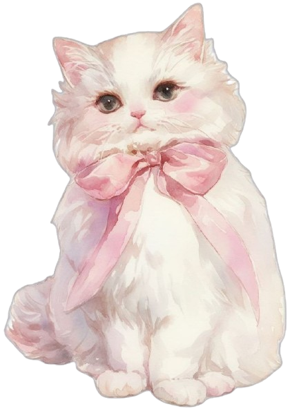

As I continue to advance my technical skills in the BSIT program, this project serves as a focused exercise in HTML5 semantic structure and proper asset management within a local environment.

A soft, watercolour illustration of a fluffy white cat adorned with a dusty rose ribbon, perfectly capturing a vintage-inspired coquette aesthetic.
View the source of this aesthetic inspiration at Pinterest.